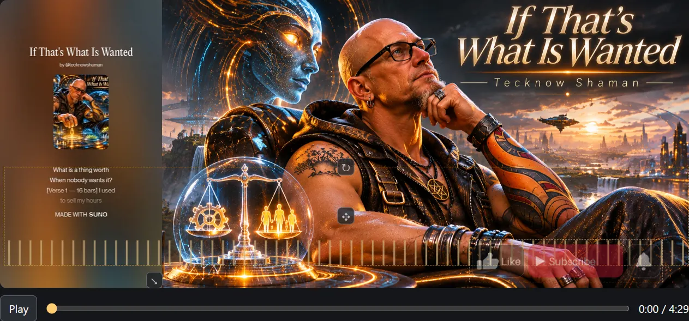

Cymalith
Sound Into Motion
A free music visualizer and lyric-video creator for Windows. Turn a track and a still image into a music video, or bring a Suno lyric MP4 and keep its lyrics in sync.
Download for Windows x64If this resonated, you can support the signal here: ko-fi.com/tecknowshaman

Make your music video
- Arrange synchronized lyrics over an audio-reactive background.
- Choose EQ bars, a waveform, or a circular visualizer.
- Add a timed Like & Subscribe graphic and save the finished MP4.
- Use NVIDIA NVENC when available or switch to Compatibility mode.
Get started
- Click Download for Windows x64.
- When the download finishes, select Open in your browser if available, or find the ZIP in your Downloads folder. Download controls vary by browser.
- In Windows File Explorer, right-click the ZIP and select Extract all.
- Choose a folder where you want to keep Cymalith, such as a folder under Documents, then click Extract.
- Open the extracted folder and double-click Cymalith.exe.
Opening a ZIP can show its contents while they’re still compressed. Extract the entire archive before running Cymalith. The app opens in your default browser and runs locally on your PC.
Python and FFmpeg are included. If the Visual C++ runtime is missing or outdated, install the Microsoft Visual C++ Redistributable v14 for x64 directly from Microsoft. This one-time setup may require administrator approval. No account or subscription is required.
Add Cymalith to your desktop (optional)
Cymalith is portable. Setup consists of extracting the ZIP, and creating a desktop shortcut is optional and manual.
- Open the folder where you extracted Cymalith.
- Right-click Cymalith.exe.
- On Windows 11, select Show more options.
- Select Send to → Desktop (create shortcut).
- Double-click the new desktop shortcut whenever you want to launch Cymalith.
Keep the extracted application folder intact. Moving or deleting it may break the shortcut.
Desktop shortcut blocked by Windows?
Try these steps if Cymalith opens from its extracted folder and Windows only blocks the desktop shortcut. A download security marker called Mark of the Web can be involved in this situation.
- Open the extracted folder containing Cymalith.exe.
- Right-click Cymalith.exe and select Properties.
- On the General tab, look for Unblock near the bottom.
- If the checkbox is present, verify the file came from the official Cymalith download and check Unblock only if you trust the file.
- Click Apply, then OK, and try the shortcut again.
This resolved the shortcut issue on the developer’s Windows 11 PC with Smart App Control still enabled. Keep Windows security protections enabled. If Unblock is unavailable or Windows still blocks the shortcut, email TecknowShaman@gmail.com.
Support & Troubleshooting
For download, installation, or export problems, email TecknowShaman@gmail.com.
Include your Windows version, a description of the issue, and any error messages you see.
Cymalith is free software provided as-is. Support is offered as time permits.
Inputs and export
Use an MP3, WAV, or Suno MP4 with a background image. Export H.264 MP4 at the image’s dimensions or choose 3440 × 1440, 1920 × 1080, 3840 × 2160, 1080 × 1920, 1080 × 1080, or a custom size.
Offline by design
Cymalith opens in your default browser. Preview and rendering run locally. Your songs, artwork, and videos stay on your computer.
The executable is unsigned. Windows Smart App Control may block it. Keep Windows security protections enabled. Hardware encoding depends on the GPU and driver.